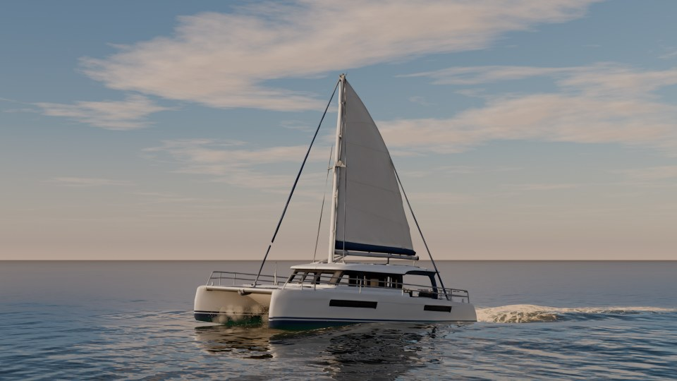
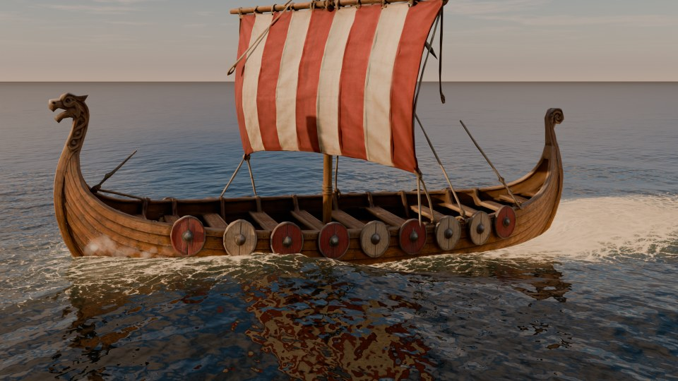
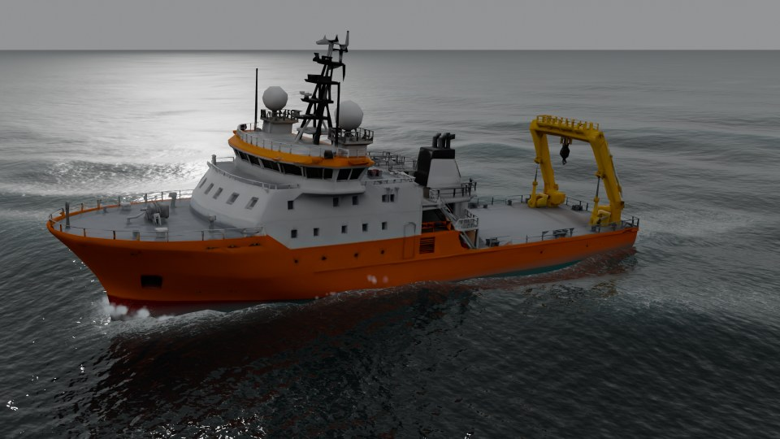
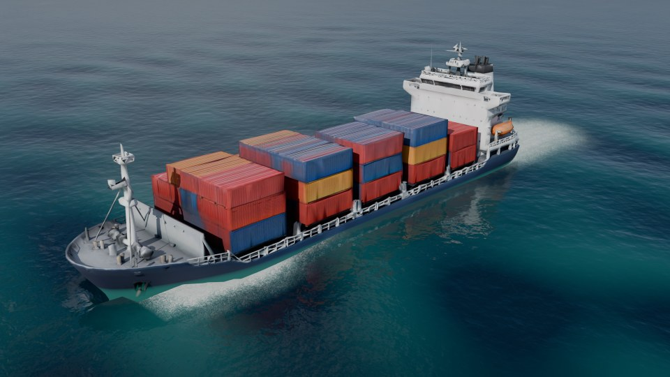
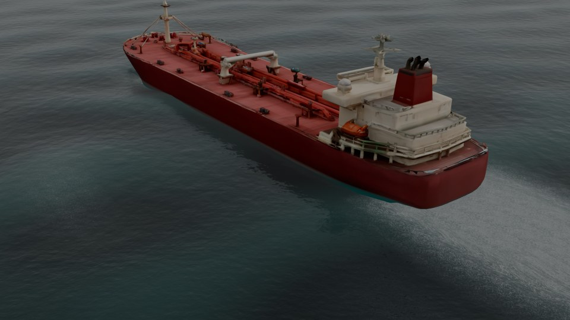

Take the helm of any boat on a live ocean in Blender, then render the drive.
Steer with the keyboard across a sea that runs in your viewport. The hull cuts through the waves and leaves a wake, foam and spray. When you stop, the drive is a take you can bake and render like any other animation.
At the helm
W and S are the throttle, A and D steer, Q and E shift the rider's weight, and C swaps the chase camera for a free one. The readout shows speed, throttle and how much of the hull is wet.
The Blender window with the full look, captured one frame per simulation step, so it plays smoother than a live drive. The live rates are under Measured, below.
The vessel cuts through waves, jumps off crests, slams back down and leaves prop wash behind it.
Your controls become keyframes on the rig. Edit them in the Graph Editor, or key them by hand and never touch the keyboard.
The wake, foam and spray bake to EXR files and play back with no Python running. A bake matches the drive bit for bit.
The fleet
Click a preview, then Add Library Vessel. It creates the ocean, the sky and the chase camera if the scene has none. Each vessel has its own mass, draught and engine, so a tanker takes its time and a speedboat planes.





| Vessel | Length | Displacement | Draught | Top speed | Full-rudder turn |
|---|---|---|---|---|---|
| Inflatable Boat (RIB) | 5.5 m | 0.6 t | 0.24 m | 36.5 kn | 2.6 L |
| Speedboat | 7.5 m | 2.6 t | 0.42 m | 51.5 kn | 2.2 L |
| Fishing Boat | 12 m | 55.9 t | 1.77 m | 11.7 kn | 2.4 L |
| Sailing Catamaran | 13 m | 10.3 t | 0.44 m | 6.5 kn* | 2.3 L |
| Viking Longship | 23 m | 170 t | 2.49 m | 11.6 kn* | 1.5 L |
| Yacht Ship | 50 m | 1,022 t | 3.00 m | 9.4 kn | 2.0 L |
| Research Vessel | 60 m | 3,084 t | 5.18 m | 10.0 kn | 2.4 L |
| Container Ship | 180 m | 90,995 t | 16.25 m | 17.2 kn | 1.6 L |
| Oil Tanker | 230 m | 173,307 t | 19.58 m | 19.1 kn | 1.7 L |
Measured in calm water in the add-on. L is the vessel's own length. *In calm air; the sails add drive with wind. Engines are tuned for driving, not real installed powers. The models were generated with an AI tool and set up for the simulation.
Select any boat, an FBX, glTF or OBJ import or a kit-bash, at any scale and heading, and press Setup Selected.
The sea
Tropical Lagoon, Caribbean Blue, Mediterranean, Open Ocean, North Atlantic, Storm, Arctic, Golden Calm, Mountain Lake, Harbour.
Ten water types, one click each. A type sets the waves, the colour and clarity, the foam, the sky and the light, and every value stays editable.
Thousands of waves in three FFT cascades, a JONSWAP wind sea plus swell. The hull, the floating objects, the spray and the foam all read the same surface. Whitecaps form where waves really compress it: none on a slight sea, more in a storm. A sum of Gerstner waves is there too, when memory matters more.
Wake, foam and spray
A wave solver on a grid round the vessel forms dispersive Kelvin wakes that blend into the open sea. Foam starts at the bow wave, the spray root and the churned water behind the stern, then streaks along the course and breaks up into lace.
The coast
Create Coast Scene builds a bay you can drive: sand, a sand bar, a rocky point and dunes, all from one height map, so what you see and what the hull touches agree. A boat driven onto the beach slides up the sand and stops.
The shore waves are the heaviest part of the add-on. Drive, bake and render them; the numbers are below.
Under water
Below sea level the water hides things with distance. You see the surface from below with Snell's window and the sun in it, light beams, the sand and fogged hulls. Hulls and objects turn blue-green with depth from above the water too. In EEVEE and Cycles.
The switch is at sea level, not at the wave above the camera, so right at the surface it can be wrong.
Floating objects
Make Floating gives any mesh a physics body with buoyancy. Crates, barrels, buoys and logs bob on the waves, ride the wake and collide with the vessel, each other, piers and the coast.
Shapes are convex hulls; a concave object made of pieces can use Convex Parts.
Autopilot
Draw the course as a curve, set the speed and press Drive Along Path. The vessel steers itself, slows in sharp turns and records a normal take.
Cameras
Add Cinematic Cameras makes Drone, Side, Onboard and Orbit cameras that follow the vessel. Cut Between Them adds timeline markers, so Ctrl+F12 renders a cut sequence straight away.
The film
Measured
Version 1.13.2 on an RTX 4060 8 GB, Ryzen 9 7950X and 32 GB RAM, in a 3440 x 1400 Blender window with the sidebar open, Material Preview, the speedboat, moderate sea. Yours will differ. Fast View leaves out EEVEE's shadows, ray tracing and see-through water during the drive only, so a live drive looks simpler than the render.
What it is not
How it was made
The code was written with an AI coding assistant, directed, tested and rendered by the developer. The nine library models were generated with an AI tool and then set up for the simulation: hull bodies, mass, engines and names.
The FFT sea, the shore waves, the surf foam, the caustics and the sand follow the method of Tidewater, an open-source browser game by D. Greenheck, under its MIT licence. The notice comes with the add-on.
The code is GPL-3.0-or-later. You may use the library models in your own renders, animations and games, and may not resell or redistribute them as models on their own.
Getting started
Questions
No. Everything is in the Ocean tab of the sidebar, and a new boat gets its values automatically. They are all there if you want to tune them.
The render looks better. Live driving uses Fast View by default, and Post Sim adds finer foam and particle whitewater to a recorded take.
Yes. A baked take plays from EXR files and keyframes with no operator running, in the viewport and in F12 renders.
No. Everything runs locally.